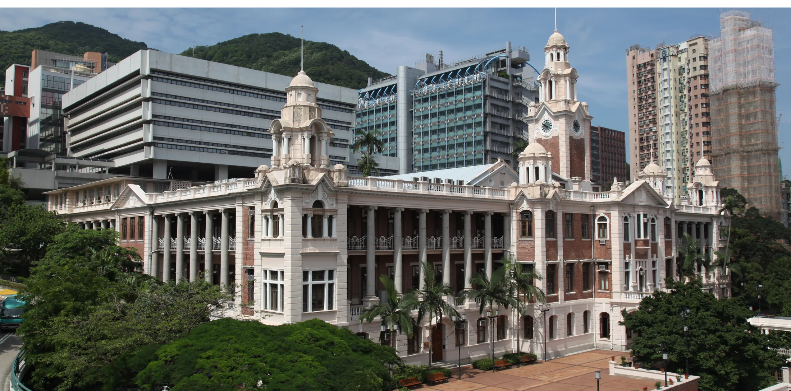
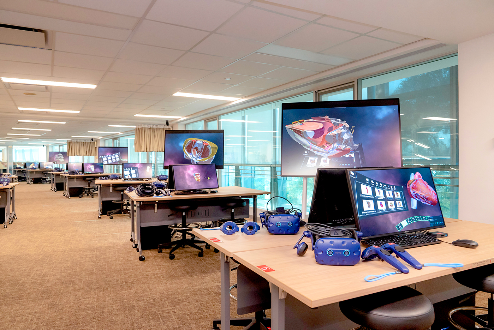
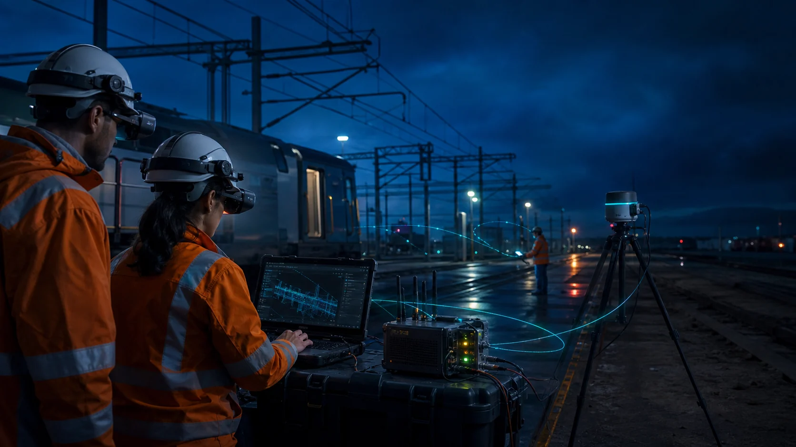

Intelligence must be situated.
We build human-centred systems where capability, context and infrastructure work as one.
From separate tools to symbiotic systems.

We explore how computing can become an enduring extension of human capability and environmental intelligence.
Three connected research pillars guide the lab: augment people, understand situations, and engineer systems that work beyond prototypes.
Human Augmentation
We integrate intelligence with the body to extend perception, agency and skill—across physical and virtual embodiments.
Embodied AI & Shared Agency
We pursue fluid cooperation in which people and embodied agents perceive, decide and act together.
Telexistence & Remote Embodiment
We extend human perception and action into remote bodies while preserving control, feedback and presence.
Cybernetic Avatars
We explore digital and robotic counterparts that expand how people communicate, collaborate and perform physical tasks.
SportsHCI & Skill Acquisition
We design situated feedback that helps people understand movement, practise deliberately and acquire physical skills.
Sensory & Cognitive Extension
We investigate responsible ways to expand what people can perceive, interpret and accomplish.
Situational Spatial Intelligence
We design AI and spatial interfaces that perceive place, activity and intent, then respond at the right moment.
Proactive Context-Aware AI
We want AI to recognise meaningful environmental cues and offer timely support before interaction becomes a command.
Adaptive Spatial Interfaces
We create interfaces whose form, placement and visibility adapt to geometry, activity and cognitive load.
Spatial Semantics & Affordances
We model what a place and its objects are for, so digital content respects the functional logic of the world.
Diminished Reality
We selectively reduce visual clutter and distraction so attention can remain on what matters.
Collaborative Situated Agency
We build shared spatial understanding for distributed people and autonomous agents working toward a common goal.

Robust & Deployable XR
We build resilient immersive infrastructure that remains responsive, usable and dependable in uncontrolled settings.
Real-World XR Infrastructure
We engineer the sensing, tracking and interaction foundation required for high-fidelity XR outside controlled labs.
Edge & Low-Latency Computing
We reduce delay and distribute computation so situated experiences stay responsive under demanding conditions.
Resilient Cross-Device Systems
We pursue stable, persistent experiences across different hardware, networks and environmental constraints.
Human-Centred Deployment
We make complex XR systems reliable and understandable enough to become invisible in everyday use.
A situated system succeeds only when it understands the person, respects the place and survives the conditions of use.